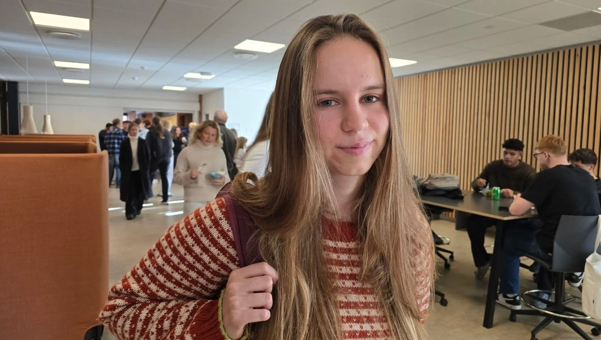
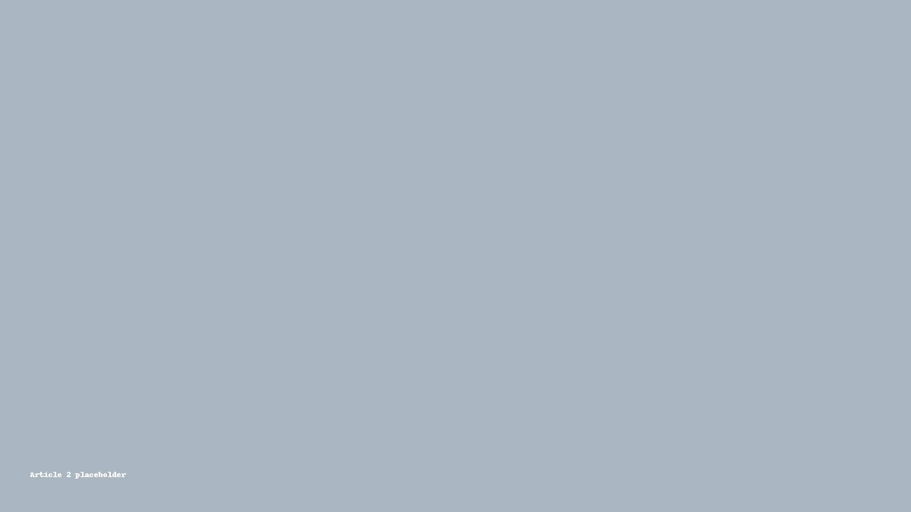
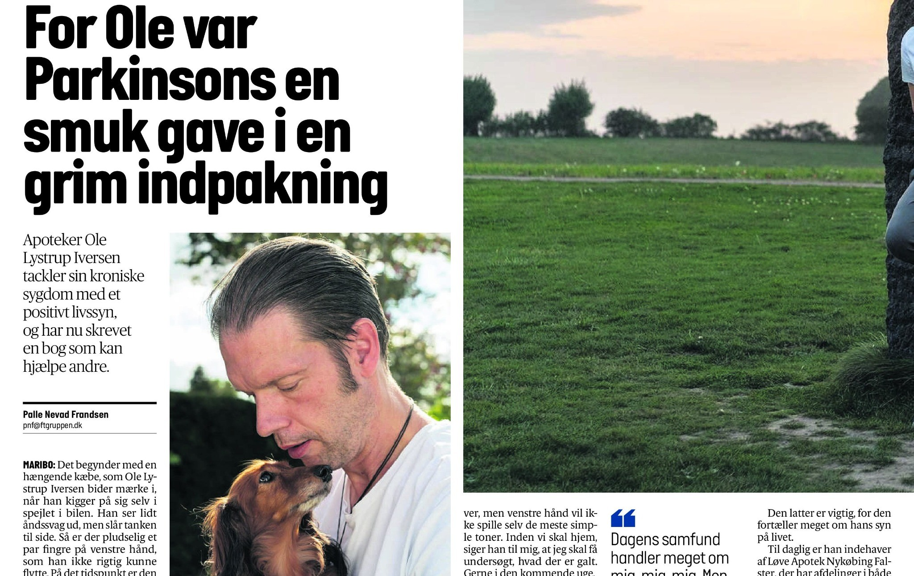
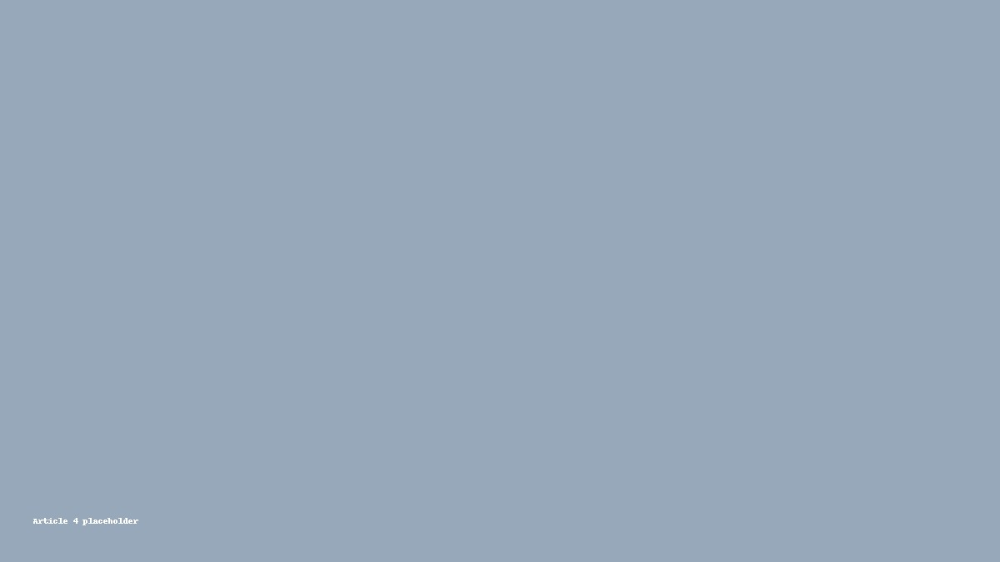
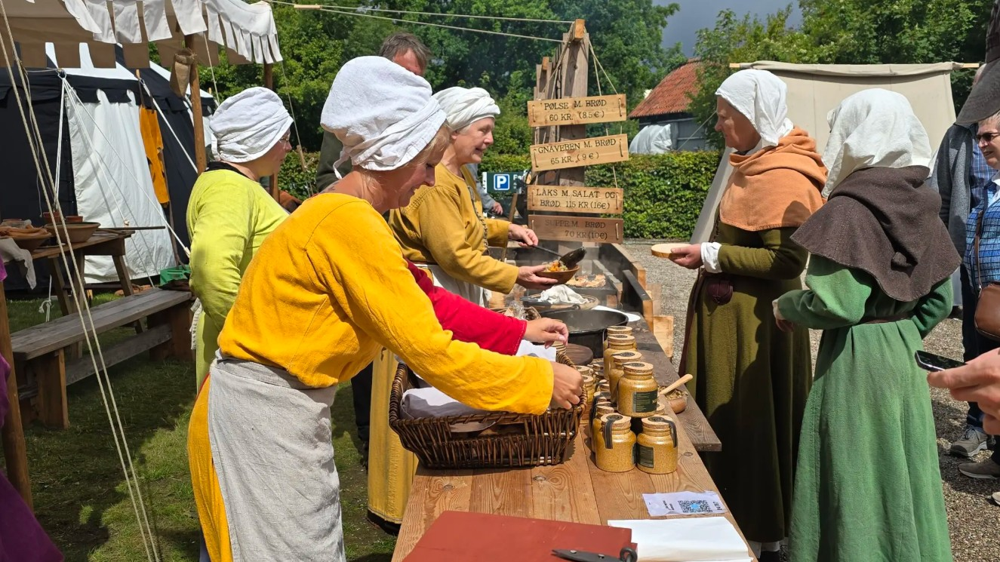
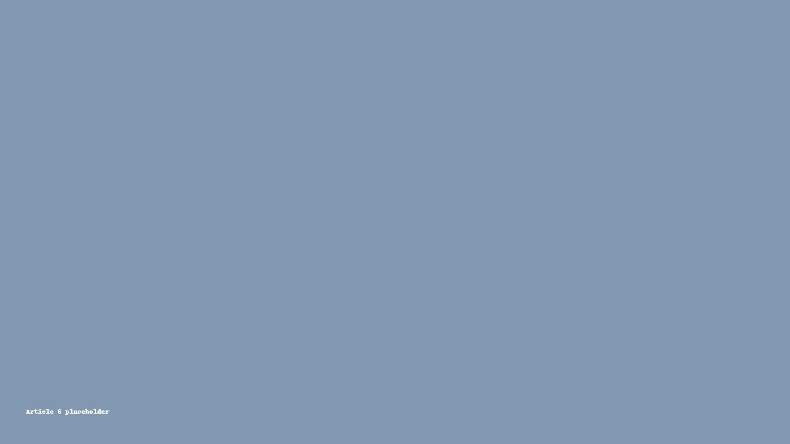
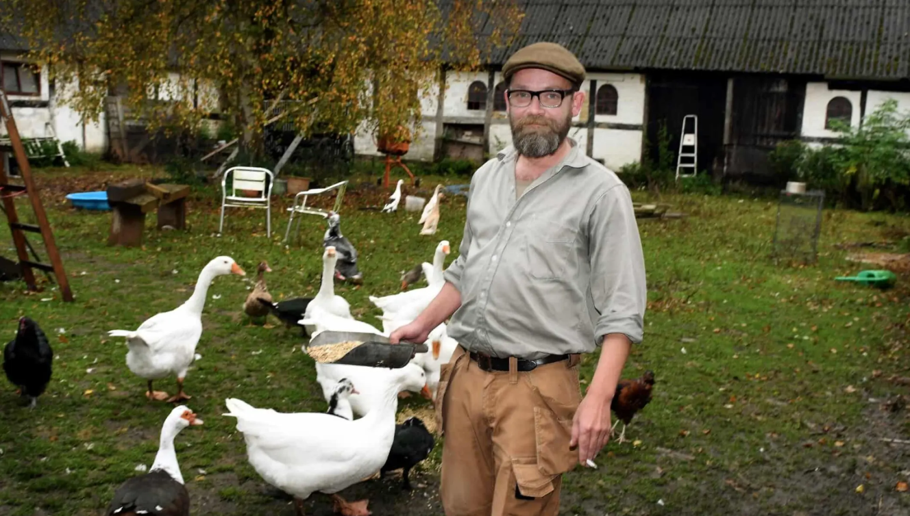
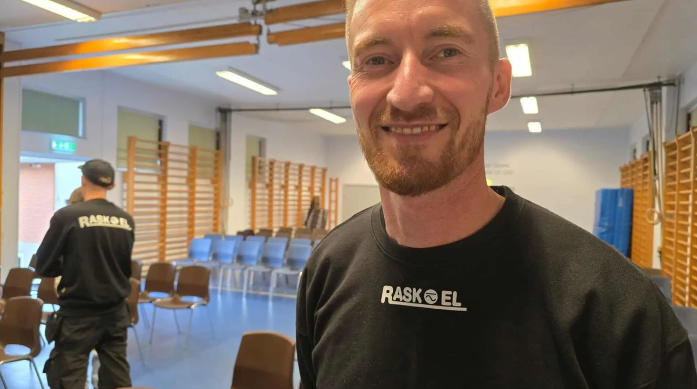
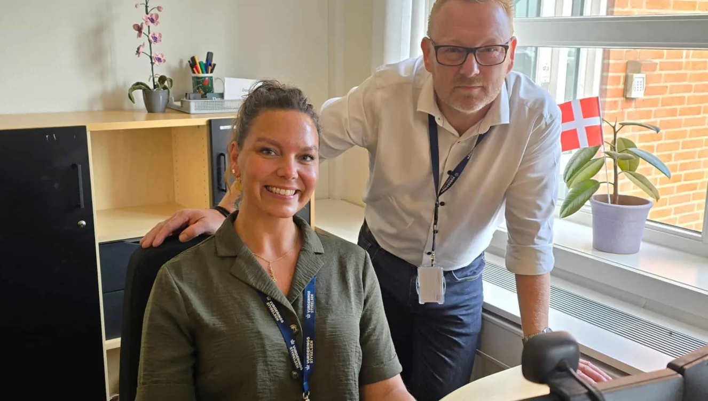

En ting bekymrer Lollands unge mere end klimaet
Unges trivsel set tæt på – hvad fylder mest, og hvorfor?
Udvalgte artikler med billede, kort beskrivelse og direkte link.

Unges trivsel set tæt på – hvad fylder mest, og hvorfor?

Skarp stemme i lokaldebatten – hvad er på spil, og for hvem?

Portræt: At leve med Parkinson – værdighed, humor og håb.

Reportage fra åbningen – mennesker, musik og fællesskab.

Arbejdsglæde, ansvar og et højt skridttal i hverdagen.

Lukning af projekt – konsekvenserne for dem, det rammer.

Portræt af Arthur Kortsen, et liv blandt dyr, ansvar og modvind – indtil helbredet satte punktum.

En håndværkers blik på faglig stolthed, uddannelse og fremtidens muligheder.

Bo fortæller om et job med kant, konflikter – og hvorfor det passer ham perfekt.

Lokale beboere frygter store konsekvenser for deres hverdag og nærområde.
Et stærkt portræt om sorg, stilhed og at finde sin egen stemme.

Stemningsfuld reportage fra en aften, der vil blive husket lokalt.
Et mix af videoer fra arbejde, frivillige poster og fritiden, hvor jeg har formidlet alt fra lokale begivenheder til personlige fortællinger og et smil på læben.